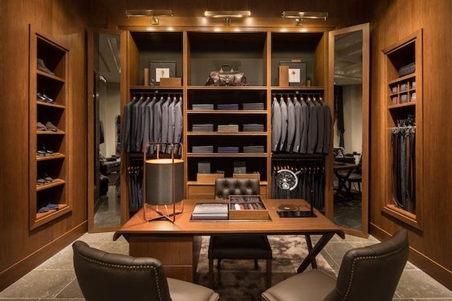

|  |
HISTORY OF THE PASSION FOR JEWELRY THROUGH THREE GENERATIONSIn 1924 with great passion and skill, Enrico Grassi Damiani began designing and producing diamond jewelry so beautiful and elegant that his fame as a master goldsmith was soon established. Tiny works of art so impressive, that noble families entrusted him with the prestigious role of personal jeweller. His son, Damiano Grassi Damiani, continued the family tradition with great creativity and strong business spirit, focusing on design and promoting technical innovations. The Damiani family in its third generation is still looking at the future with passion, creativity and commitment. Today, Damiani enjoys success all over the world as Italy’s leading luxury jewelry brand respecting the highhest artisan traditions and elegance of the Made in Italy in Italy style. |
ONE BRAND, MANY AWARDS OF RECOGNITIONDamiani jewelry has achieved prestige and status for its superior design, diamond quality and excellent manufacturing. Every piece of jewelry represents the creative idea of its origin and the artistic value from the master goldsmith. Great craftsmanship and infinite passion give each piece life and a spiritual soul at each individual stage of its creation. Damiani has achieved an unprecedented distinction of receiving 18 Diamonds International Awards, the Oscar of the jewelry world. These awards are the highest honor bestowed to a jewelry house. Damiani was granted these awards for the excellence of its design and craftsmanship creating beautiful diamond jewels. Wearing Damiani jewellery means living a special day.We wanted to recount the magic and uniqueness, capturing the most intimate and spontaneous moments, from dawn to dusk of this fantastic day in the life of our model. Refined tones are a feature of a campaign which alternates shots set in still-life of jewellery on a soft background, which exalt absolute beauty and preciousness. |
|
| Developed by Luan Menezes - 2023 | |